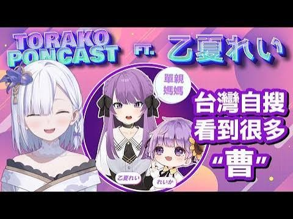
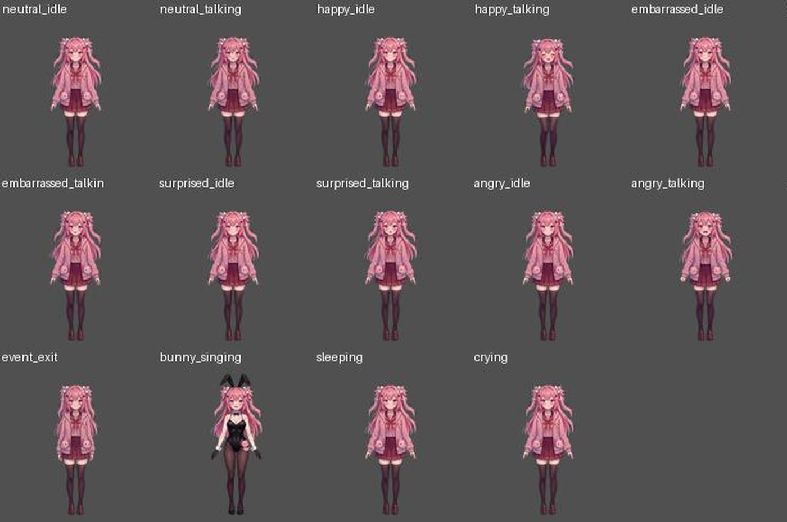
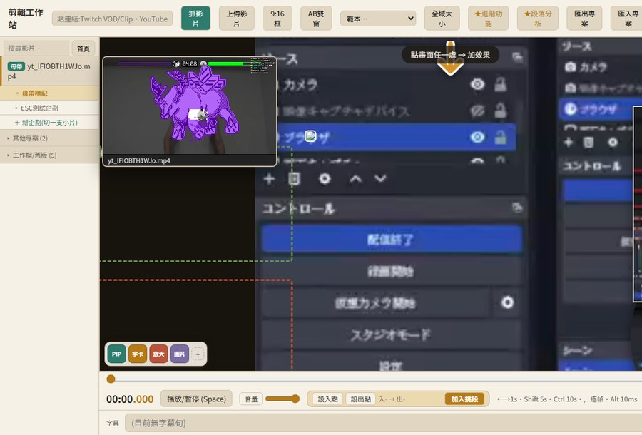
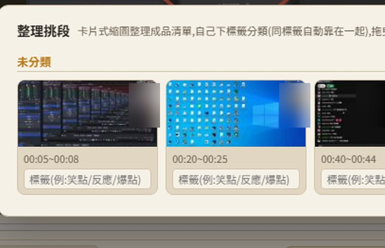

WELLEW STUDIOWelleW 影音製作工作室的首頁
◆ 作品精選（點圖進作品頁）


◆ 工作室資料
| 名稱 | WelleW |
|---|---|
| 負責人 | Welkin |
| 型態 | 一人影音製作工作室 |
| 經歷 | Yahoo 奇摩電競主編／魔方網遊戲編輯 |
| 業務 | 賽事與節目企劃／剪輯／3D 資訊動畫／特效合成／直播元件／社群系統／AI 剪輯工具／新聞稿 |
◆ 關於
我是 Welkin，WelleW 是我的一人工作室。做的範圍是節目企劃、剪輯、特效合成、直播元件、社群系統架設，以及自己寫的 AI 剪輯工具，需要協作時再依專案找人。
◆ 聯絡
| welkinhung7797@gmail.com | |
| LINE | welkinhung |
| ITCH.IO | GRAFFITI FIGHT ↗ |
★★★ 服務項目 ★★★
| 服務 | 內容 | 代表作品 |
|---|---|---|
| 賽事與活動企劃 | 電競賽事、線下活動、24 小時直播企劃，從企劃到現場執行 | Yahoo 名人邀請賽／新生橋鐵籠賽／名人爬梯 Party |
| VTuber 企劃與經營 | 角色定位、直播內容、社群經營，AI VTuber 從人設到推流一條龍 | 虎子／AI 親親子 |
| 影音剪輯 | 綜藝節目、實況長片、Shorts | 九孔要變帥／薛喜／Eason／緣結 |
| 3D 資訊動畫・合成 | 真實地形資料 3D 動畫、解說動畫、實拍合成 | 赤倉雪場／虛實整合 |
| 直播與社群系統 | 直播畫面元件、Discord 架設、多平台留言管理 | 直播元件／Discord／社群管理站 |
| AI 剪輯工具 | 自製 AI 剪輯工作站，直播連結進去、AI 鋪字卡音效特效 | GAKEY |
| 新聞稿撰寫 | 活動通稿、專訪、品牌敘事 | 新聞稿 |
●Yahoo 奇摩電競名人邀請賽
ESPORTS EVENT / YAHOO CELEBRITY INVITATIONAL
◆ 作品資料
| 主辦 | Yahoo 奇摩電競 |
|---|---|
| 期間 | 2018 年起，一年數屆 |
| 項目 | 《爐石戰記》《快打旋風 V》《英雄聯盟》《絕地求生》（各屆不同） |
| 我的角色 | 賽事企劃／專案統籌（任 Yahoo 奇摩電競主編期間） |
◆ 說明
Yahoo 奇摩電競自辦的名人賽系列：邀請台灣知名選手與實況主，搭配素人預選，從線上一路打到線下決賽。2018 年 1 月首屆《爐石戰記》名人邀請賽是 Yahoo TV 第一次自辦電競賽事，之後擴大到格鬥、MOBA 與跨國賽。
◆ 歷屆紀錄
| 時間 | 內容 |
|---|---|
| 2018.01 | 首屆《爐石戰記》名人邀請賽。總決賽超過百位粉絲到場，直播聊天室留言數成長近六倍。總獎金 NT$100,000，冠軍 Jay。 |
| 2018.06 | 第二屆在新生高架橋下的鐵籠舞台舉行，1v1 單挑。詳見 新生橋鐵籠賽。 |
| 2018.12.08 | 線下決賽在 WirForce 2018（花博爭豔館）主舞台舉行，項目為《快打旋風 V》與《爐石戰記》：Tom60229、羅杰率領的台灣藍、紅兩隊，迎戰香港 HGG 亞運金牌與日本選手組成的聯軍。 |
| 2019.06–07 | 第五屆《爐石戰記》與《絕地求生》跨國賽：爐石邀請 Tom60229、羅杰、薛喜等台灣選手，對上香港、韓國、新加坡、泰國、菲律賓隊伍，總獎金 US$15,000；絕地求生 64 位日韓、東南亞、台港澳選手雙排參賽。 |
賽事素材


●新生橋鐵籠賽（第二屆 Yahoo 名人邀請賽）
ESPORTS EVENT / CAGE MATCH UNDER THE XINSHENG VIADUCT
◆ 作品資料
| 時間 | 2018 年 6 月 2–3 日（線下鐵籠挑戰賽） |
|---|---|
| 地點 | 台北 新生高架橋下 |
| 項目 | 《英雄聯盟》單挑／《爐石戰記》／《快打旋風 V》 |
| 冠軍 | 英雄聯盟 M17 Dee／爐石戰記 FW Tom60229／快打旋風 V RB |
| 獎金 | 總獎金 NT$300,000，各項冠軍 4 萬、亞軍 2 萬 |
| 我的角色 | 創意發想／企劃執行 |
◆ 說明
第二屆名人邀請賽主打「單挑 1 on 1」。把比賽搬到新生高架橋下，搭一座鐵籠舞台，讓選手在籠子裡一對一對決，觀眾在籠外近距離看。把街頭格鬥的感覺接到電競，做出衝突感強、有話題的賽事場景。素人先經線上預選，晉級者再進線下鐵籠挑戰名人。
賽事素材

●Yahoo 奇摩電競《爐石戰記》名人爬梯 Party
LIVE STREAM EVENT / 24-HOUR LADDER MARATHON
◆ 作品資料
| 首屆時間 | 2018 年 4 月 14 日 22:00 – 4 月 15 日 22:00（24 小時） |
|---|---|
| 形式 | 兩人一組，用全新帳號從零爬天梯，比 24 小時內誰爬最高 |
| 參賽 | A 隊 Tom60229、薛喜／B 隊 紹安、羅杰／C 隊 Uzra、偷米 |
| 結果 | B 隊以傳說 3273 名奪冠；獎金 7 萬／2 萬／1 萬 |
| 延續 | 辦到第三屆（2019 年 4 月，羅杰與 Eason 的 B 隊奪冠） |
| 我的角色 | 活動企劃／內容統籌 |
◆ 說明
配合《爐石戰記》新資料片「黑巫森林」上線，把平常看不到的爬梯過程變成 24 小時直播：觀眾看得到選手怎麼分配粉塵、怎麼組牌。中間穿插 DJ 點歌、早餐時段、神秘來賓問答送卡包，讓一整天的直播有節奏。首屆六位選手都在一天內爬上傳說，B 隊還打出一套牌組 20 連勝的紀錄。
賽事素材

●VTuber 虎子（何虎子 Torako Ho）
VTUBER / CONTENT STRATEGY
◆ 作品資料
| 頻道 | YouTube「虎子 Channel」，約 10 萬訂閱 |
|---|---|
| Super Chat | 台灣全頻道年度排行：2024 年第 8 名、2025 年第 4 名，連續 2 年進入前 10（Playboard） |
| 累計 | Super Chat 累計逾 NT$520 萬（Playboard） |
| 我的角色 | 品牌定位／直播內容企劃／社群經營 |
◆ 說明
虎子是 Yahoo 旗下的台灣 VTuber，設定是精通多國語言、愛上台灣食物和啤酒而留在台灣的日本女孩。我負責她的品牌定位、直播內容節奏與粉絲經營：遊戲台、雜談、轉盤企劃、跨界聯動節目，以及直播精華與 Shorts 的經營。
直播與節目

●AI VTuber 親親子
AI VTUBER / CHARACTER × VOICE × LIVE
實際直播（YouTube「AI親親子」頻道）
直播間互動示意
※ 互動流程示意：台詞為示範內容；立繪與情緒狀態切換是親親子實際使用的素材。
◆ 作品資料
| 類型 | AI VTuber（PNGTuber 立繪＋語音合成） |
|---|---|
| 狀態 | 14 種立繪狀態：待機、講話、生氣、害羞、哭、唱歌… |
| 直播 | 跨平台同步推流 |
| 頻道 | YouTube「AI親親子」：1,270 訂閱，61 支影片、186 支 Shorts |
| 成績 | 直播影片最高約 1.7 萬觀看；Shorts 最高約 1.1 萬觀看 |
| 我的角色 | 角色企劃／狀態機設計／語音合成串接／直播與短影音經營 |
◆ 說明
操作員打一行字，親親子在直播間用自己的聲音講出來，立繪依照台詞的情緒切換表情。人設、立繪狀態機、語音合成到推流都是我一條龍串起來的。
素材

●九孔要變帥 康康篇
VARIETY SHOW EDITING
◆ 作品資料
| 節目 | 《九孔要變帥》 |
|---|---|
| 來賓 | 康康 |
| 片長 | 20 分 33 秒（16:9） |
| 上架 | 2026.09.03，YouTube「九孔要變帥」頻道 |
| 成績 | 66 萬觀看 |
| 我的角色 | 剪輯／字卡與音效／特效包裝 |
◆ 說明
九孔穿上廚師服做菜招待康康，兩人邊吃邊聊。剪輯用綜藝節目的節奏：重點台詞上字卡、笑點配音效、插入演唱會等回憶畫面，讓 20 分鐘的對談一路有梗。全集用自製的 AI 剪輯工作站 GAKEY 完成。
節目片段
●薛喜 實況剪輯
STREAM EDITING / SHORTS
◆ 作品資料
| 頻道 | YouTube「天梯小旋風薛喜」 |
|---|---|
| 作品 | 虧皮龜狗第一次看到有人 WASD 可以按到手指打結（Shorts） |
| 上架 | 2026.10.17 |
| 成績 | 17.5 萬觀看 |
| 我的角色 | 挑段／剪輯／字幕與音效 |
◆ 說明
從薛喜的 Twitch 實況裡挑出一個梗，剪成一支 Shorts：前三秒就進笑點，只留這一個梗。
Shorts
●Eason 實況剪輯
STREAM EDITING / SHORTS
◆ 作品資料
| 頻道 | YouTube「禿頭博士Eason」 |
|---|---|
| 作品 | 【Eason】系列 Shorts |
| 成績 | 向子午計畫，開戰！11.3 萬／遊戲橘子所有單位都是羅傑的人 9 萬／羅傑說麻將打十塊二十塊不如去旁邊跳舞 7.7 萬觀看 |
| 我的角色 | 挑段／剪輯／字幕與音效 |
◆ 說明
從 Eason 的實況中挑出好笑的對話，剪成一支一個梗的直式 Shorts。
●緣結 直播剪輯
VTUBER STREAM EDITING / SHORTS & EVENT
◆ 作品資料
| 對象 | VTuber 緣結 |
|---|---|
| 內容 | 直播精華 Shorts（9:16）／巴哈姆特 30 週年星據點活動開場素材 |
| 期間 | 2026 年 10 月 |
| 我的角色 | 挑段／剪輯／字卡／活動影片製作 |
◆ 說明
從緣結的直播中挑出有梗的片段做成 Shorts：臉部特寫、立體字卡、聊天室留言疊字，讓沒看直播的人也看得懂當下在笑什麼。另外為巴哈姆特 30 週年星據點的線下活動，製作現場播放的開場素材。
活動開場素材
直播 Shorts
●其他剪輯作品
EDITING / SELECTED WORKS
◆ 作品資料
| 作品 | 類型 | 成績 |
|---|---|---|
| 實況精華剪輯 | 16:9 | 95.5 萬觀看 |
| 腳本規劃影片 | 16:9 | 26.3 萬觀看 |
| 醫療器材產品影片 | 16:9 | — |
| Shorts 兩支 | 9:16 | 11 萬／6.7 萬觀看 |
●赤倉觀光雪場 3D 資訊動畫
3D DATA VISUALIZATION / SKI RESORT
◆ 作品資料
| 主題 | 日本新潟 赤倉觀光雪場與周邊雪場 |
|---|---|
| 規格 | 4K 60fps |
| 資料 | 真實座標與高程、衛星影像、路線考據 |
| 段落 | 全日本俯瞰／雪場簡介地形飛行（41 個雪場標籤）／衛星實景山體／交通比較地圖／跳台與地形解說（飛行軌跡） |
| 我的角色 | 資料整理／3D 地形與鏡頭設計／動畫製作 |
◆ 說明
介紹赤倉觀光雪場的影片需要讓觀眾看懂「雪場在哪、旁邊有什麼、怎麼去」。地形、雪場範圍和路線都用真實座標與高程資料算出來，再用連續的 3D 鏡頭從全日本一路飛進雪場，最後用剪紙風地圖比較交通方式。
雪場簡介 3D 地形飛行
跳台與地形解說：滑雪飛行軌跡動畫
其他段落
●虛實整合影片
VIRTUAL × REAL COMPOSITING
◆ 作品資料
| 素材 | 汐科站月台實拍 |
|---|---|
| 內容 | 實拍場景合成虛擬角色與列車動畫 |
| 我的角色 | 合成／動畫 |
◆ 說明
把實拍的月台照片當底，合成虛擬角色和進站列車，讓角色像真的站在現場。右邊可以拉中間的線，左右比對合成前後。
合成前後對照

●AI 剪輯工作站 GAKEY
AI EDITING WORKSTATION
◆ 作品資料
| 類型 | 自製剪輯軟體 |
|---|---|
| 功能 | 直播自動下載／逐字稿自動生成／AI 自動鋪素材／多軌時間軸／毫秒級拖曳／一鍵出片 |
| 實績 | 一集 20 分鐘節目，AI 鋪 234 顆字卡、音效與特效，人只鎖定 29 顆 |
| 我的角色 | 產品設計／開發 |
◆ 說明
貼一條直播連結進去，影片、聊天室與逐字稿一起抓回來。人挑段，AI 鋪素材：字卡、音效與特效由 AI 照規則落到軌道上，每一顆都能拖、能改字、能重生。九孔要變帥、薛喜、緣結的剪輯都是用它做的。
AI 鋪素材過程
介面


●社群管理站
COMMUNITY OPS INBOX
◆ 作品資料
| 平台 | YouTube／X／Threads／Instagram／Facebook |
|---|---|
| 功能 | 五平台留言收件匣／未回覆優先／回覆者排行／統一發文／邀請制登入 |
| 實接 | YouTube 頻道 1,060 則留言 |
| 我的角色 | 產品設計／開發 |
◆ 說明
五個平台的留言收進同一個收件匣：一站看、一站回，統一發文一次送多平台。誰最常來留言、哪些還沒回，打開就看到。
介面


●客製化直播元件
LIVE STREAM OVERLAYS
◆ 說明
依直播內容製作需要的畫面元件，直接掛進 OBS 使用。
◆ 元件清單
| 01 | 聊天室留言疊圖 |
|---|---|
| 02 | 即時投票系統 |
| 03 | 斗內目標進度條 |
| 04 | 洗版留言→HYPE 計數 |
| 05 | 斗內跑馬燈 |
●Discord 架設
DISCORD COMMUNITY
◆ 說明
身分組、頻道結構、互動指令與自動化。
◆ 服務項目
| 權 | 身分組與權限架構設計：對應不同社群動線。 |
|---|---|
| 頻 | 頻道結構規劃：公開／內部／分眾頻道分流。 |
| 令 | 留言互動指令：抽籤、佔卜、點歌，成員打一行字就有回應。 |
| 應 | 表情機器人：關鍵字自動蓋章、投票統計、活動簽到。 |
| 養 | 掛機養成遊戲：伺服器內建長期經營的 RPG 系統。 |
| 軸 | 精華時間軸整合：VOD 上架後自動整理分段時間軸，主播不用自己重看一次直播才能剪。 |
| 通 | Webhook 自動化：開台通知、新片上架、排程廣播。 |
●新聞稿撰寫
PRESS WRITING
◆ 說明
活動通稿、專訪與品牌敘事。
◆ 經歷與實績
| 經歷 | Yahoo 奇摩電競主編 |
|---|---|
| 經歷 | 魔方網遊戲編輯 |
| 專訪 | 100+ 場 |
| 撰稿 | 1,000+ 篇新聞稿／公關稿 |
●聯絡我
CONTACT
◆ 有任何想法都歡迎聊聊
| welkinhung7797@gmail.com | |
| LINE | welkinhung |
| ITCH.IO | GRAFFITI FIGHT ↗ |